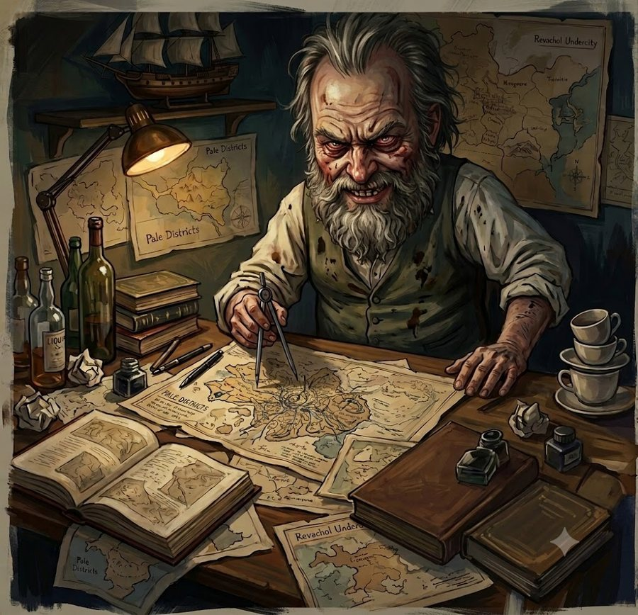

Three views: pinch open or closed to step between local (½ mile), region (50 miles) and the framed realm. Drag to move the camera in the first two; the compass button brings it back to you, then steps you closer. The red + hides a secret for testing. Use + on the map to mark a place by touch. A city stays unseen until you come
within arrival range, then it clears its share of the state.
Travel
Terrain
Field test
Arrow keys or WASD move you; hold Shift to ride hard. Speed follows the map scale,
so a continent takes about as long to cross as a city block. In this mode the atlas can carry you
straight to any city.
Journal
Open World Maps · build ? · your journal never leaves this device.
OpenWorld
Open World Maps
The land beyond your door is lost to fog. Walk it, and the world remembers you were there.

The Cartographer
The Cartographer
Where have your travels taken you?
Nowhere new
The Cartographer
Before we begin — how would you like to play?
The Cartographer
Good. And how do you explore?
The Cartographer
Greetings, adventurer. Tell me — what have you seen of this world so far?
Nothing yet
The Cartographer
Some ground is not worth the walking. Tell me — what will you never see?
Everything stays
The Cartographer
And tell me, adventurer — what do you still want to see?